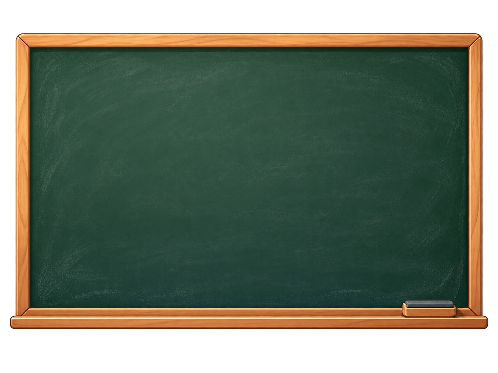
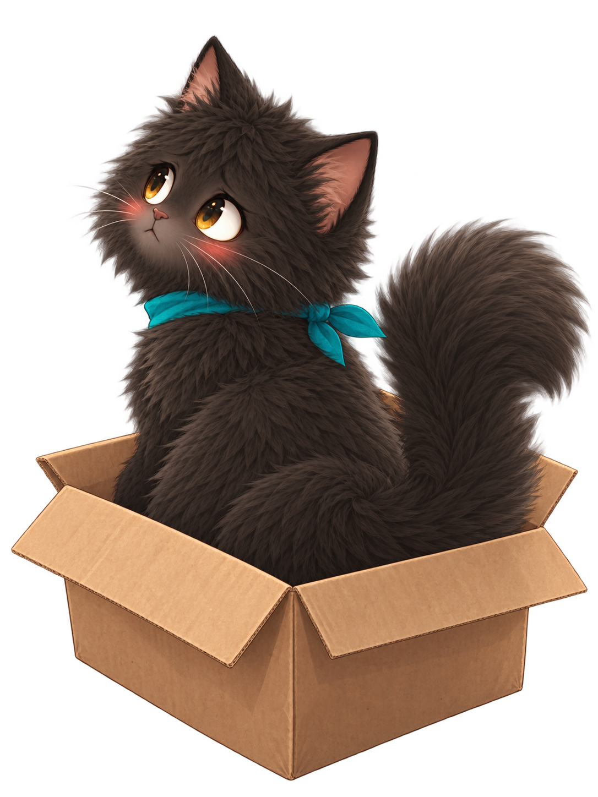

Capire meglio
Riprendere un argomento poco chiaro e ricostruire i passaggi che mancano.
Unisce competenze e sensibilità diverse nel campo dell'educazione e dell'insegnamento, mettendo insieme competenze didattiche e attenzione educativa ai bisogni di chi studia.
L’idea alla base del progetto è semplice: non tutte le difficoltà dipendono dallo stesso motivo e non tutte le persone imparano allo stesso modo. Per questo cerchiamo di costruire percorsi che tengano conto della situazione concreta di ogni studentessa e di ogni studente.
Offriamo lezioni in presenza e online, supporto allo studio e percorsi di accompagnamento nelle materie scientifiche e negli altri ambiti in cui possiamo mettere a disposizione le nostre competenze.
Il supporto può riguardare una difficoltà specifica oppure proseguire nel tempo, seguendo l’evoluzione del percorso scolastico o universitario.
Riprendere un argomento poco chiaro e ricostruire i passaggi che mancano.
Affrontare verifiche, esami ed esercizi complessi con maggiore sicurezza.
Rafforzare le basi e trasformare conoscenze fragili in strumenti più stabili.
Organizzare il lavoro e trovare strategie di studio più efficaci e autonome.
Prima di iniziare cerchiamo di capire da dove nasce la difficoltà e quale possa essere il modo più utile per affrontarla.
A volte il problema riguarda un concetto non ancora compreso, altre volte basi poco solide, un procedimento imparato in modo meccanico, un metodo di studio poco efficace oppure semplicemente la necessità di una spiegazione diversa.
L’obiettivo non è soltanto arrivare alla soluzione di un esercizio o superare la verifica successiva, ma aiutare chi studia a comprendere meglio ciò che sta facendo, acquisire metodo e diventare progressivamente più autonomo.

Individuiamo le difficoltà, le basi da rafforzare e gli obiettivi da raggiungere.
Adattiamo spiegazioni, strumenti ed esercizi a ogni situazione.
Il lavoro cambia insieme ai progressi di chi studia.

Reddito Math è un progetto in continua evoluzione.
Accanto alle lezioni stiamo sviluppando uno spazio digitale pensato per raccogliere nel tempo lezioni, materiali, esercitazioni, laboratori interattivi e strumenti utili allo studio.
L’obiettivo è creare un ambiente che studentesse e studenti possano utilizzare anche al di fuori delle lezioni, per ripassare, esercitarsi, approfondire un argomento o provare a comprenderlo da un punto di vista diverso.
Contenuti e spiegazioni da riprendere quando serve.
Ci rivolgiamo a tutte le studentesse e a tutti gli studenti che vogliono migliorare il proprio percorso di studio e affrontarlo con maggiore consapevolezza e sicurezza, che si tratti di rafforzare la preparazione, comprendere meglio ciò che stanno studiando, sviluppare nuove competenze o acquisire un metodo più efficace.
Non è necessario avere già chiaro quale sia la difficoltà o da dove cominciare: individuare insieme i punti su cui lavorare può essere già una parte importante del percorso.
Vuoi capire se Reddito Math può esserti utile?
Raccontaci cosa stai studiando e in cosa vorresti ricevere supporto.